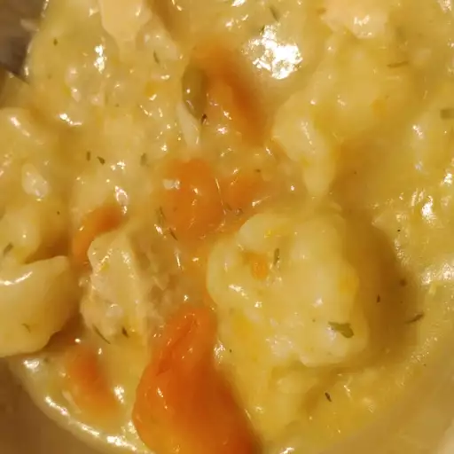

Home
Chicken and Dumplings

Chicken and dumplings.
Ingredients
- 2 tablespoons butter
- 1 small onion, diced
- 3 skinless, boneless chicken thighs, cut into cubes
- 1 skinless, boneless chicken breast half, cut into cubes
- 6 cups water
- 1 (10.5 ounce) can condensed cream of chicken soup
- 3 cubes chicken bouillon
- 1 teaspoon poultry seasoning
- ¾ cup milk
- 1 ½ cups all-purpose baking mix (such as Bisquick®)
Steps
- Melt butter in a large pot over medium heat.
Add onions; cook and stir until they begin to soften, about 3 minutes.
Add chicken; cook and stir until no longer pink in the center, about 10 minutes.
Add water, condensed soup, bouillon cubes, and poultry seasoning; stir to combine.
Increase the heat to medium-high and bring to a simmer.
- Meanwhile, pour milk into a mixing bowl.
Add baking mix and stir until a dough forms.
- Drop spoonfuls of dumpling mix into simmering soup.
Reduce the heat to medium-low, cover, and simmer for 10 minutes.
Turn dumplings over and continue to simmer until no longer doughy in the center, about 10 more minutes.
- Enjoy!